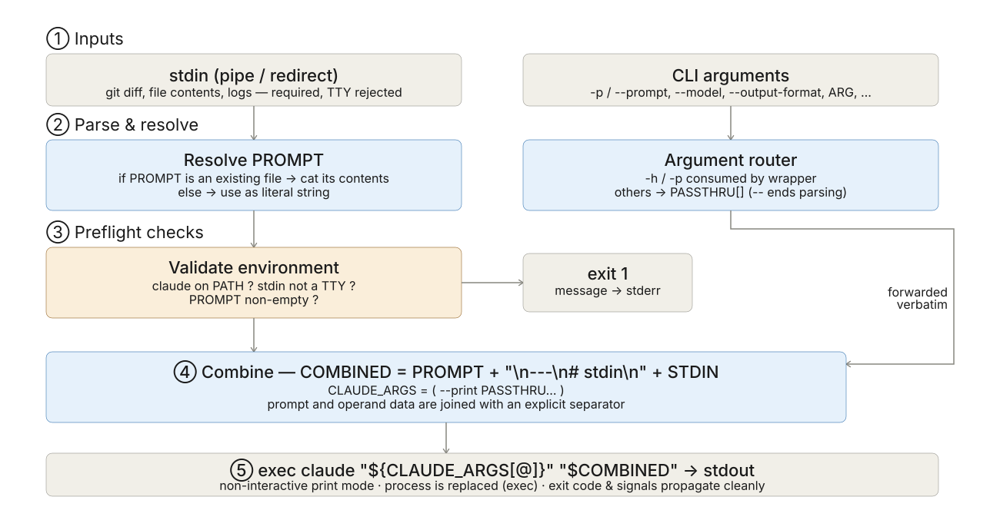

自作shellscript
2026年05月09日
はじめに
使い方
ユースケース
stdin と prompt を結合し claude --print に流す bash ラッパー
claude-stdin-prompt はpipe で受けたデータと prompt を1つに結合し，claude --print に渡すシェルスクリプト-p/--prompt 以外の全フラグ（--model・--output-format・--debug 等）はそのまま claude へ転送prompt の値が既存ファイルパスならその中身を，そうでなければリテラル文字列をプロンプトとして使用基本形
claude --print の引数結合・stdin 連携の煩雑さを Unix 流に整理
claude --print 単体運用の課題
$(cat prompts/x.md) の手書きが必要claude-stdin-prompt が提供する解決
claude --print に execcmd | claude-stdin-prompt -p "指示" のワンライナー化が成立はじめに
使い方
ユースケース
位置引数または -p で指示を渡し，stdin で材料を流す
claude-stdin-prompt は指示（prompt）と材料（stdin）を分離して受け取るclaude --help の機能をそのまま利用可Usage
# commit メッセージ生成
git diff --cached | claude-stdin-prompt \
--model sonnet -p "commit message を作成して"
# prompt をファイルから読み込み
claude-stdin-prompt --model opus \
-p prompts/review.md < diff.patch
# release note を JSON 形式で
git log -n 20 | claude-stdin-prompt \
--output-format json -p "リリースノート作成"
# 位置引数として prompt を渡す
cat data.csv | claude-stdin-prompt \
--model sonnet "外れ値を指摘して"wrapper が消費するのは2種類のみ・残りは claude –help の全機能をそのまま利用可
ラッパーが消費するオプション
| Option | 説明 |
|---|---|
-p, --prompt <text\|file> |
プロンプト文字列・またはプロンプトファイルパス |
-h, --help |
ヘルプ表示 |
-- |
以降を claude へ verbatim 転送 |
REMARKS
-p を明示するか -- で区切ると解消
claude-stdin-prompt --debug -p "PROMPT"claude へ素通しされるオプション例
| Option | 用途 |
|---|---|
--model sonnet\|opus\|haiku-... |
モデル選択 |
--output-format json\|text |
出力フォーマット |
--append-system-prompt <text> |
system prompt 追記 |
--add-dir <path> |
参照ディレクトリ追加 |
--max-budget-usd <N> |
予算上限 |
--json-schema <path> |
出力スキーマ強制 |
--debug |
デバッグログ表示 |
claude --help を参照4ステップで「pipe された材料 + 指示」を claude --print に exec
-h/-p を消費，他は PASSTHRU 配列に転送用として蓄積cat で中身に展開，そうでなければリテラル文字列cat で全量読み込みexec claude --print [PASSTHRU...] "<combined>"（プロセス置換でシェル離脱）claude へ渡される最終的な引数文字列
--- ＋ Markdown 見出し # stdin：claude 側がプロンプトとデータを文脈的に区別しやすいjq 等にも繋げられるはじめに
使い方
ユースケース
ノートブック JSON diff のノイズから実質的な変更点だけを抽出し，そのまま git commit へ
update notebook のような雑メッセージになりがちfeat(eda): 売上の曜日効果を可視化 のような実質的な変更点を抽出可能git commit -F - に直結すればメッセージ手書き不要でワンライン化Pipeline：diff → 要約 → コミット
2タグ間の git log をユーザー視点のリリースノートに変換し，そのまま GitHub Release に投稿
git log v1.0..v1.1 --oneline を投げてFeatures / Fixes / Internal の3カテゴリ整形を AI に依頼gh release create --notes-file - に直結すれば1パイプでリリース完了Pipeline：log → 整形 → Release 投稿
# git log → claude → GitHub Release を一気通貫
git log v1.2.0..v1.3.0 --oneline \
| claude-stdin-prompt --model opus \
-p prompts/release-note.md \
| gh release create v1.3.0 \
--title "v1.3.0" --notes-file -
# CHANGELOG.md に追記する亜種
git log v1.2.0..v1.3.0 --oneline \
| claude-stdin-prompt -p prompts/release-note.md \
| tee -a CHANGELOG.mdgh pr diff を観点付きでレビュー → そのまま gh pr comment で PR にコメント投稿
prompts/review.md に観点（セキュリティ・テスト・命名・性能）をチーム標準として集約gh pr comment --body-file - に直結すれば自動投稿まで1パイプPipeline：PR diff → レビュー → PR コメント
jq で後段処理--output-format json ＋ --json-schema で型固定し，jq 経由で集計・可視化スクリプトへ
--output-format json ＋ --json-schema で型固定の構造化出力に統一jq でフィールド抽出すれば後段の集計・通知・可視化スクリプトにそのまま連結可Pipeline：query → 構造化要約 → jq → 下流
# DB → claude (JSON) → jq → 集計
psql -A -F, -c "SELECT date, sales FROM orders" \
| claude-stdin-prompt --output-format json \
--json-schema schemas/outliers.json \
-p "外れ値の日付を outliers 配列で返して" \
| jq -r '.outliers[] | .date' \
| xargs -I{} python plot_outlier.py {}
# CSV → 自然文要約 → Slack 投稿
cat sales.csv \
| claude-stdin-prompt --model sonnet \
-p "曜日効果を箇条書きで要約" \
| slack-cli post --channel "#data-analysis" -2系統の入力（stdin・CLI 引数）を結合し，exec で claude プロセスに置換

claude コマンドに割ったす直前に，stdin と prompt を結合させ，それをclaudeに渡す小さな実装に Unix 流のセーフティと拡張性を凝縮
① exec でプロセス置換
exec claude ... でbash プロセスを claude に置換② PREV_WAS_FLAG ヒューリスティクス
-flag の直後の非フラグトークンを value として組にする--model sonnet 等を正しく転送可③ -p 1引数で2モード
-f 別フラグを増やさず短く保つ（同名ファイルが偶然存在する場合の挙動変化はトレードオフ）④ TTY ガード [ -t 0 ]
⑤ -- 強制エスケープ
-- 以降は無条件で claude へ転送⑥ --- ＋ Markdown 見出し区切り
\n\n---\n# stdin\n で明示Regmonkey Presentation. ©Ryo Nakagami. All rights reserved.